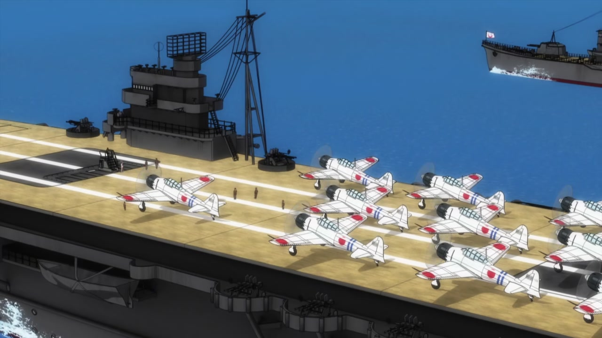
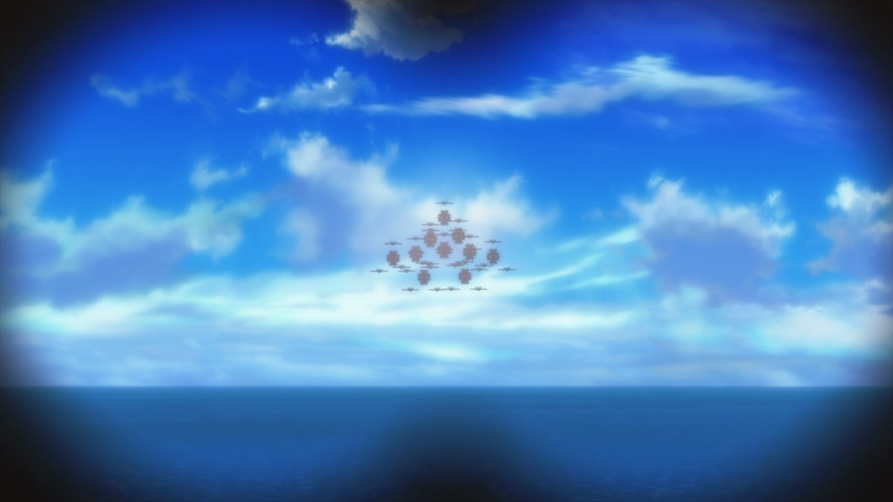

Back
Stock footage from episode 1
Brighter and sharper magic circle
Carrier is no longer missing the prow, and the deck elevators are slightly darker. The TV version has some weird yellow object floating alongside it that was removed.
Carrier has been repositioned, is lit better, and the planes on the deck have darker red markings.
Brighter lighting
The planes have darker markings and thicker outlines. The deck is higher resolution.
This takeoff shot transitions into CG later, rather than starting like that
Retextured sea, brighter ship lighting, redrawn Takami
Carrier and escorts are now sailing in the correct direction.
Takami's eyes have been redrawn and her mouth has been retimed
Chidori has been redrawn
Hikari's face is less lopsided
Takami has yet another face redraw
Hikari isn't blurred out. The background Zero's have redrawn markings.
The shot is zoomed out, making the next shot of her flailing around a bit more plausible
The scene is brighter, the ocean is retextured and the Zero's have been relit, and in a strange reversal, they now have less saturated markings. The Fuso flags have been added back.


More relit planes
This takeoff is less blurry and her magic circle fits the deck better.
Different sea texture, planes
The distant Neuroi are no longer shrouded in darkness


The planes have darker propellors, the Neuroi are surrounded by a light patch
Takami has been moved up a bit.
Her head is moved very slightly
Slightly different movement
More hazey Neuroi.
Slight repositioning
Takami's face has been redrawn, her glowy eyes are brighter and have narrower pupils.
Obvious redraw is obvious.
Redder beams.
Redder beams and brighter planes.
Weird floating Neuroi core has been removed.
Slightly different sky, sharper contrails.
Propellors
Hikari has very slightly different eye shines